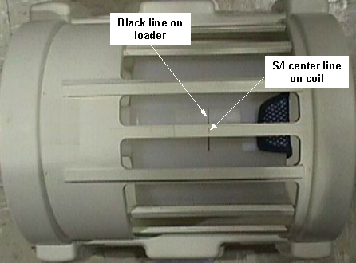
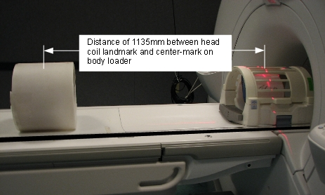
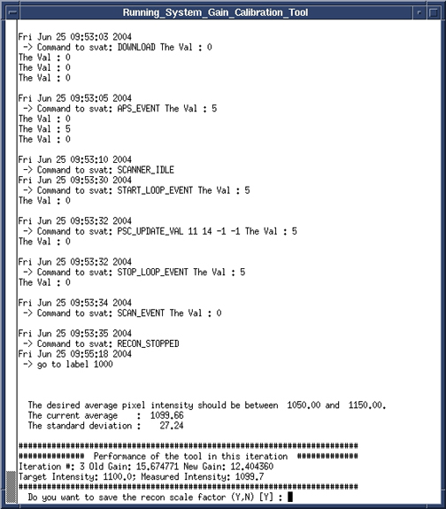

Operating Documentation
Direction 5670000, Rev# 1
Optima MR450w 1.5T Service Methods
Module Version 13.0, Version Date 12/9/09
Operating Documentation |
| Required Persons | Preliminary Reqs | Procedure | Finalization |
|---|---|---|---|
| 1 | 5 mins | Head and Body = 20 mins; Body = 10 mins; Head = 10 mins | Head and Body = 2 mins; Body = 2 mins; Head = 2 mins |
The System Gain calibration is performed to determine the standard HEAD (transmit/receive coil) and BODY recon scale factors that will achieve a known level of image intensity when using the standard HEAD coil or BODY coil respectively with a known phantom solution and protocol. The desire is that when the same solution or tissue is scanned in either the standard HEAD or BODY coils with the same protocol, those tissues will have approximately the same image intensity level on a given system and between systems of like type. This calibration accounts for differences in standard HEAD and BODY receive coil sensitivity, preamp gains, cable loss, receiver gain and other factors. The calibration must be done on standard HEAD AND BODY at least once to calibrate those paths. The procedure/tool can calibrate BOTH standard HEAD and BODY together (one run, Section 4.4.2) OR just HEAD alone (section 4.4.3) OR just BODY alone (section 4.4.4).
System Gain Calibration consists of the following:
Head and Body Calibration. See Head and Body Calibration
| NOTE: | Both calibrations can be run at the same time. Otherwise, run individual modes as listed in the next two options. |
Body Calibration. See Body Calibration
Head Calibration. See Head Calibration
| Item | Qty | Effectivity | Part# | Manufacturer | |
|---|---|---|---|---|---|
| Head TLT Sphere for 3.0T (Pink Solution) | 1 | 3.0T | 2359877 | - | |
| Head TLT Loader for 3.0T | 1 | 3.0T | 2360031 | - | |
| Body TLT Sphere with Loader for 1.5T | 1 | 1.5T | 2248363 | - | |
| Head TLT Sphere with Loader for 1.5T | 1 | 1.5T | 2125244 | - | |
| Body TLT Sphere for 3.0T (Pink Solution) | 1 | 3.0T | 2360025 | - | |
| Body TLT Loader for 3.0T | 1 | 3.0T | 2360037 | - | |
| Service Filler Panel | 2 | 1.5Tw | 5344577 | - | |
| Condition | Reference | Effectivity |
|---|---|---|
No image artifacts, verified by reviewing the images after scan is complete. (See Installation & Calibration Wizard | - | - |
Install a service filler panel under each of the two cradle top panels. (See Illustration 1.)
Illustration 1: Install Service Filler Panels

Position the head sphere in the head loader and fasten the strap. Position the head loader on top of the head loader positioner in the head coil (see Illustration 2) so the loader's black center line lies directly below the head coil's Superior/Inferior center marker. (See Illustration 3.)
| NOTE: | 3.0T spheres are pink. 1.5T spheres are light green. |
Illustration 2: Position Head Sphere Loader

| NOTE: | Make sure the top section of the split-top coil is properly oriented. Arrows on the NOTICE labels should be aligned for the correct orientation. |
Illustration 3: Landmark the Head Sphere

Properly position the Head Sphere and Loader as previously noted.
Establish landmark on the center line of the Head Loader.
Establish landmark, but do not Advance to Scan.
Run the cradle in so the display reads 1135mm. (See Illustration 4.)
Illustration 4: Distance between Head Coil Landmark and Center Mark on Body Loader

Turn on the alignment light and then position the body loader on the cradle so that the alignment light is properly centered on the loader crosshair. Place wedges on both sides of the body loader to prevent movement.
Run the Cradle back so that the alignment light is on the center of the Header Loader.
Establish landmark, and then press [Advance to Scan].
As a final positioning check, ensure that:
The head coil is all the way in position.
The TLT Phantom is all the way in the head coil.
Align the laser cross mark with the head loader cross mark to landmark the head coil. As the calibration runs, the patient table moves into position by itself for the body scan.
Start the System Gain Calibration Tool.
Starting restricted service tools available to GE Field Service:
Ensure that a service key is installed.
Select [Calibration Wizard] from the calibration menu and select [Click here to start this tool] to launch the wizard.
Select [System Gain Calibration] from the menu and review and verify the prerequisites are met.
Select [Click here to start this tool] to start the procedure.
If you are unable to start the Restricted Service tools, use the non-proprietary method described in the next bullet.
Starting non-proprietary service tools:
From the Common Service Desktop, select [Calibration].
Select [System Gain Calibration] from the calibration menu, and select [Click here to start this tool] to start the procedure.
Type 3 and press <Enter> to select Both Head and Body Mode, and the calibration begins. (See Illustration 5.)
| NOTE: | Head Gain will calibrate first. When complete, Body will calibrate. The following two illustrations apply to both Head and Body. |
Illustration 5: Starting System Gain Calibration Tool

The calibration results display on the screen. If adjustments are required, the system asks, “Do you want to save the recon scale factor”. Type “Y” and press <Enter> to save the recon scale factor. (See Illustration 6.)
Illustration 6: Calibration Output

Type 4 and press <Enter> to exit the tool. The calibration is complete.
| NOTE: | The system is dependent on landmarking the head coil, even for body mode only scans. |
Type 2 and press <Enter> to select Body Mode, and the calibration begins. (See Illustration 5.)
When the test is complete, the calibration results display on the screen. If adjustments are required, the system asks, “Do you want to save the BODY recon scale factor”. Type “Y” and press <Enter> to save the calibration file. (See Illustration 6.)
Type 4 and press <Enter> to exit the tool. The calibration is complete.
Type 1 and press <Enter> to select Head Mode only calibration, and the calibration begins. (See Illustration 5.)
When the test is complete, the calibration results display on the screen. If adjustments are required, the system asks, “Do you want to save the HEAD recon scale factor”. Type “Y” and press <Enter> to save the calibration file. (See Illustration 6.)
Type 4 and press <Enter> to exit the tool. The calibration is complete.
Remove all phantoms from the patient table used during the calibration.
Remove all service tools from the patient table used during the calibration.
Remove service filler panel from under each of the two cradle top panels.